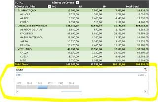
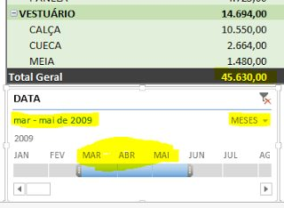
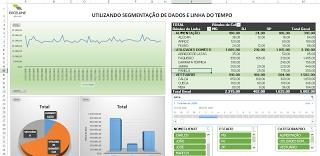

Nas versões antigas do Excel era possível filtrar uma tabela dinâmica com filtros de relatório, mas não era fácil ver o estado do filtro quando vários itens estavam selecionados. A partir do Excel 2010 temos a segmentação de dados e, a partir do 2013, a linha do tempo, dois recursos que tornam a filtragem visual e interativa.
Baixe a planilha do exercício: modelo-excel-segmentacao-e-linha-do-tempo.xlsx. Ela traz os exemplos deste capítulo com as fórmulas funcionando: altere os valores azuis e veja o resultado. Traz a base já formatada como Tabela, um painel que reage a período e estado e o passo a passo para inserir a segmentação e a linha do tempo de verdade.
Segmentação de dados
A segmentação de dados é um conjunto de botões em que clicamos para filtrar a tabela dinâmica, sem abrir listas suspensas para procurar os itens. Além da filtragem rápida ela mostra com clareza o filtro aplicado, o que permite entender de relance o que o relatório exibe. Normalmente cada segmentação fica associada à tabela em que foi criada, mas também pode ser autônoma, referenciada por funções de cubo OLAP e ligada depois a qualquer tabela dinâmica.
Linha do tempo
A linha do tempo simplifica a comparação dos dados de uma tabela ou gráfico dinâmico em períodos diferentes. Em vez de agrupar por datas, você filtra de forma interativa ou percorre períodos em sequência, rolando o desempenho mês a mês com um clique.
Selecione qualquer célula da tabela dinâmica e use INSERIR, LINHA DO TEMPO. O Excel lista as colunas do tipo data da origem de dados, no exemplo escolhemos DATA e insere o objeto, que pode ser movido e redimensionado como qualquer outro.

Clique em um ano para filtrar, depois em outro e compare os totais, ou clique e arraste para selecionar uma faixa. A linha do tempo agrupa por anos, trimestres, meses ou dias.

No exemplo foram selecionados de março a maio de 2009 no agrupamento por meses e de 1º a 3 de março no agrupamento por dias. O resultado final é uma planilha com gráficos, segmentações e linha do tempo trabalhando juntos sobre a mesma tabela dinâmica.
